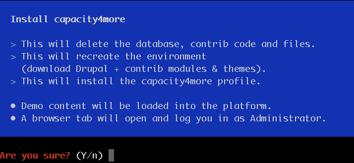
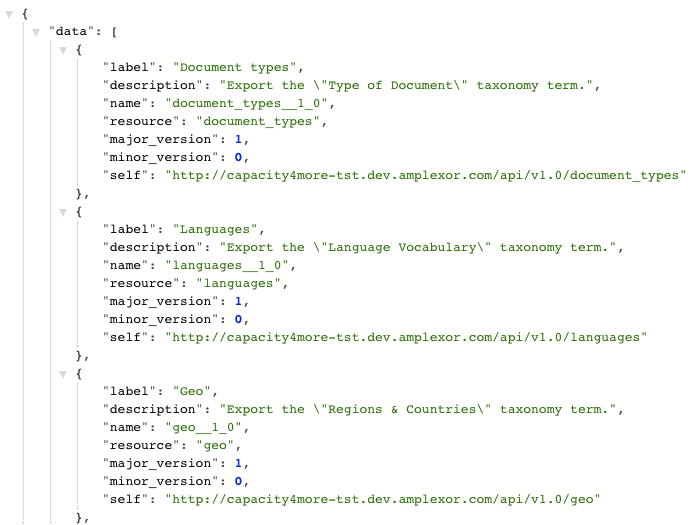
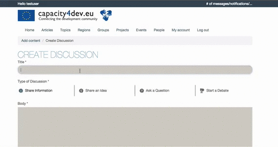
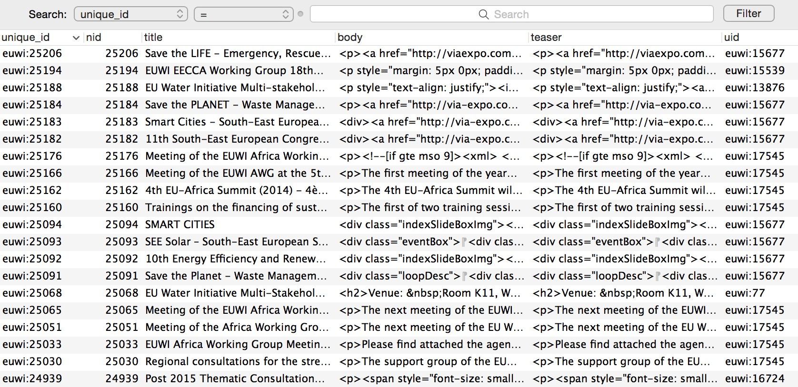

Capacity4Dev
How to build a modern platform
Best practices
- Transparency
- Work on my computer syndrome
- Automatic testing
- We are part of a community
Best practices
- Transparency
- Work on my computer syndrome
- Automatic testing
- We are part of a community
Installation profile
Everything in code

Best practices
- Transparency
- Work on my computer syndrome
- Automatic testing
- We are part of a community
Contributions
- Organic groups
- Message stack
- Entity reference
- Pluggable node access
- csv2sql
RESTful server
https://example.com/api

Quick Post & Activity Stream
Because we all hate Form API
Re-using code
Because we all love Form API

Behat
Feature: Group dashboard
As a group member and non-member
In order to see the group latest activity and information
I need to be able to see a dashboard with different widgets
@api
Scenario: Check dashboard is not accessible for not member of the group with restricted access.
Given I am logged in as user "mariecurie"
When I change access of group "Movie Popcorn Corner" to "Restricted"
And I am logged in as user "isaacnewton"
And I visit the dashboard of group "Movie Popcorn Corner"
Then I should see "Access denied"
Migrate
Getting your own data in
